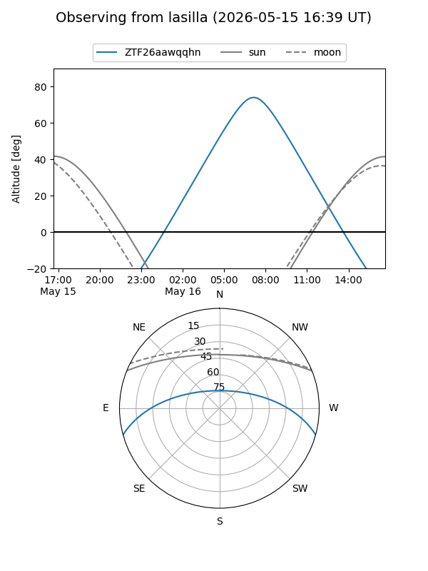
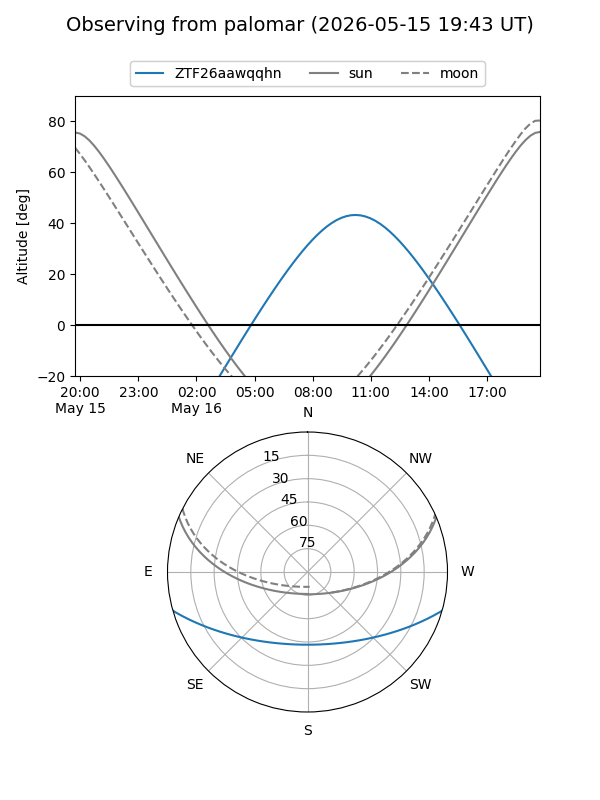

ZTF26aawqqhn
Target ZTF26aawqqhn at 2026-05-16 11:54
Aliases and brokers:
FINK: link
Lasair: link
ALeRCE: link
alt names
ZTF26aawqqhn (ztf,fink_ztf)
Coordinates:
equatorial (ra, dec) = 269.8923,-13.37849
equatorial (HMS+DMS) = 17:59:34.16,-13:22:42.57
galactic (l, b) = (15.0726,+5.09344)
Flags:
Photometry:
last ztfg=19.88
2 ztfg detections
Lightcurve
Visibility


Additional plots